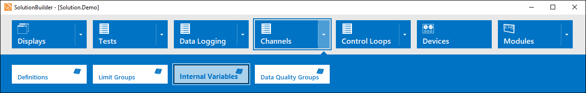
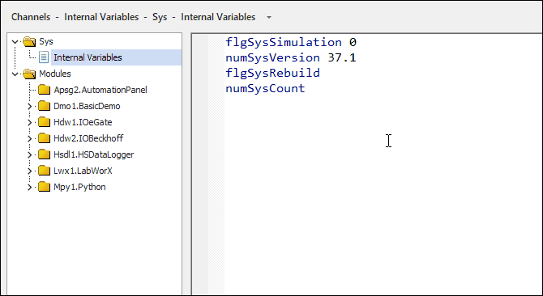
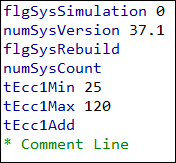
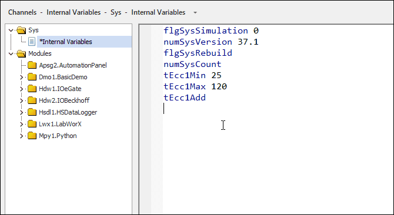

iTest User's Guide
Internal variables are special channels that do not have any attributes associated with them. These channels can be used and referenced in VCL, calculations, and some mailslot messages but cannot be used on displays or in data logs. Internal variables are stored in the Intervar.dat file located in the $SUPPORTDIR. You can edit this file in SolutionBuilder by navigating to the Internal Variables editor.
Internal Variables Menu Option

The Internal Variables editor is a free-form editor. To edit the internal variables stored in the Intervar.dat file, type the variable followed by an optional variable to be used as the initial value for that value. The variable name follows the same naming convention as channel names and only supports a length up to 32 bytes. You can add a maximum of 2000 internal variables.
Internal Variables Editor

To add a comment to the editor, type an asterisk followed by the comment. Selected text can also be commented/uncommented using the Comment and Uncomment right-click options.
Add Comments

The following right-click options are available in the editor:
Right-Click Options
| Option | Description | Keyboard Shortcut |
| Cut | Removes the selected text and copies it to the clipboard. | CTRL + X |
| Copy | Copies selected text in the editor. | CTRL + V |
| Paste | Pastes copied/cut text in the editor. | CTRL + P |
| Find... | Launches the Find and Replace dialog with the Find tab displayed. | CTRL + F |
| Replace... | Launches the Find and Replace dialog with the Replace tab displayed. | CTRL + H |
| Make Uppercase | Makes selected text uppercase. | CTRL + SHIFT + U |
| Make Lowercase | Makes selected text lowercase. | CTRL + U |
| Comment/Uncomment | Comments/uncomments out a line of text in the editor. Text does not need to be selected or highlighted to comment it out. | - |
| Undo | Undoes the last action. | CTRL + Z |
| Redo | Redoes the last undone action. | CTRL + Y |
| Preferences... | Launches the Editor Properties dialog, which enables you to modify the appearance of the editor. You can customize the font style and size, display line numbers, and enable outlines for blocks of code. | - |
You can bookmark lines within the editor by clicking the line in the left-side margin. Bookmarking allows you to mark lines within the editor and then quickly navigate to them.
Adding Bookmarks
